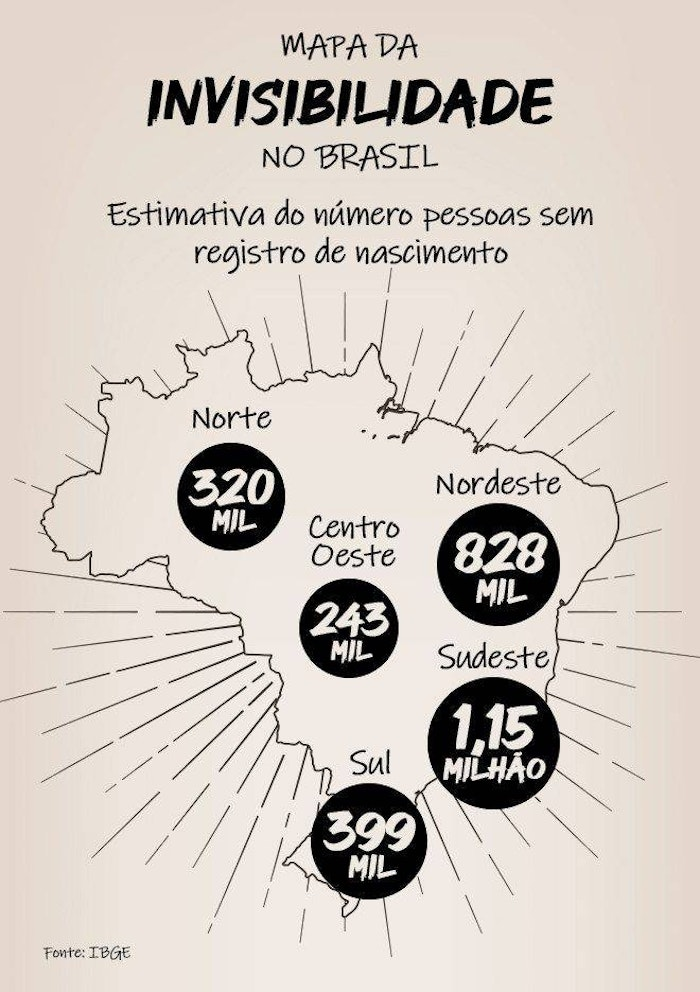
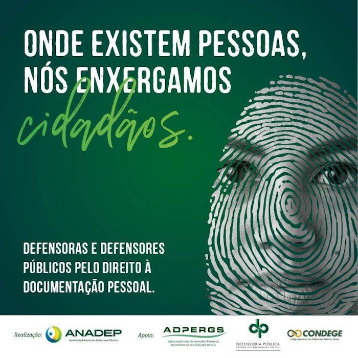

Com base na leitura dos textos motivadores seguintes e nos conhecimentos construídos
ao longo de sua formação, redija texto dissertativo-argumentativo em norma padrão da língua portuguesa
sobre o tema "Invisibilidade e registro civil: garantia de acesso à cidadania no Brasil",
apresentando proposta
de ação social que respeite os direitos humanos. Selecione, organize e relacione, de forma coerente e
coesa,
argumentos e fatos para defesa de seu ponto de vista. Não se esqueça: seu texto deve ter mais de 7
(sete) linhas e, no máximo, 30 (trinta) linhas.
TEXTO I:
Toda sexta-feira, o ônibus azul e branco estacionado no pátio da Vara da Infância e da Juventude, na
Praça Onze, Centro do Rio, sacoleja com o entra e sai de gente a partir das 9h. Do lado de fora, nunca
menos de 50 pessoas, todas pobres ou muito pobres, quase todas negras, cercam o veículo, perguntam,
sentam e levantam, perguntam de novo e esperam sem reclamar o tempo que for preciso. Adultos, velhos e
crianças estão ali para conseguir o que, no Brasil, é oficialmente reconhecido como o primeiro documento
da vida - a certidão de nascimento. (...)
Ao longo do discurso desses entrevistados, fica clara a forma como os usuários se definem: "zero à
esquerda", "cachorro", "um nada", "pessoa que não existe", entre outras, todas são expressões que
conformam claramente a ideia da pessoa sem registro de nascimento sobre si mesma como uma pessoa sem
valor, cuja existência nunca foi oficialmente reconhecida pelo Estado.
Disponível em: ESCÓSSIA, F. M. Invisíveis: uma etnografia sobre identidade, direitos e cidadania nas trajetórias de brasileiros sem documento. Tese (Doutorado em História, Política e Bens Culturais). Fundação Getúlio Vargas. Rio de Janeiro. 2019.
TEXTO II:
A Lei de número 9534 de 1997 tornou o registro de nascimento gratuito no Brasil. Só que o problema
persiste, mostrando que essa exclusão é complexa e não se explica apenas pela dificuldade financeira em
pagar pelo registro, por exemplo.

Disponível em: https://estudio.r7.com/os-invisiveis-10082020 (adaptado).
TEXTO III:
A certidão de nascimento é o primeiro e o mais importante documento do cidadão. Com ele, a pessoa existe
oficialmente para o
Estado e a sociedade. Só de posse da certidão é possível retirar outros documentos
civis, como a carteira de trabalho, a carteira de identidade,
o título de eleitor e o Cadastro de Pessoa
Física (CPF). Além disso, para matricular uma criança na escola e ter acesso a benefícios sociais,
a
apresentação do documento é obrigatória.
Disponível em: https://www2.senado.leg.br/bdsf/handle/id/70224 (adaptado).
TEXTO IV:

Disponível em: https://www.ufrgs.br/humanista/2018/07/16/brasil-esta-proximo-de-erradicar-o-subregistro-civil-de-nascimentos/